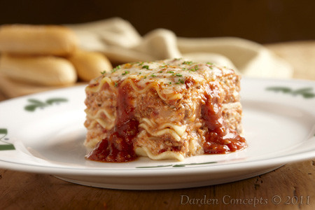

Lasagna

Description
Lasagna is a classic Italian dish made with layers of pasta, meat sauce, and cheese. It's hearty, comforting, and perfect for family dinners.
Ingredients
- 12 lasagna noodles
- 1 lb ground beef
- 2 cups marinara sauce
- 1 cup ricotta cheese
- 2 cups shredded mozzarella cheese
- 1/2 cup grated Parmesan cheese
- 1 egg
- 2 cloves garlic, minced
- 1 tsp dried basil
- Salt and pepper to taste
Steps
- Preheat your oven to 375°F (190°C).
- Cook the lasagna noodles according to package instructions. Drain and set aside.
- In a large skillet, cook the ground beef over medium heat until browned. Add minced garlic and cook for another minute. Drain excess fat.
- Add marinara sauce to the beef and simmer for 10 minutes. Season with salt, pepper, and dried basil.
- In a bowl, combine ricotta cheese, egg, and half of the grated Parmesan cheese. Mix well.
- In a baking dish, spread a thin layer of meat sauce on the bottom. Layer with 3 lasagna noodles, then spread a layer of the ricotta mixture, followed by a layer of meat sauce, and sprinkle with mozzarella cheese. Repeat layers until all ingredients are used, ending with a layer of meat sauce topped with mozzarella and remaining Parmesan cheese.
- Cover with aluminum foil and bake for 25 minutes. Remove the foil and bake for an additional 25 minutes or until the cheese is bubbly and golden brown.
- Let the lasagna cool for 10-15 minutes before serving. Enjoy!
Back to Home